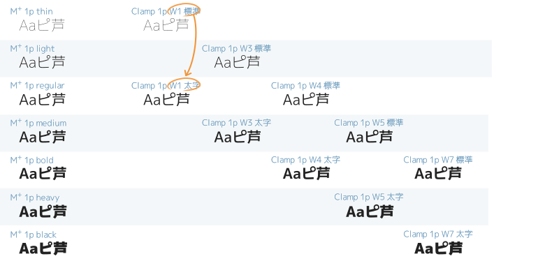

M+（エムプラス）を元にしたフォント
M+フォントは、無償で提供されている高品質フォントです。改変も許可されているので、字形を変更したフォントを配布します。
Clamp（クランプ）
Miguフォントと同様にM+フォントを加工しました。Miguフォントとは違い、IPAゴシックと合成していません。
- （利点）Miguフォントと同じ判別性・特徴。
- 半濁点が大きい、全角ひらがな・カタカナもプロポーショナル、JIS2004字体対応など。
- 2ウェイト（標準／太字）×5種類（W1, W3, W4, W5, W7）
- 1種類のフォントには標準／太字の2ウェイトだけあります。 5種類を使い分けることで、特にWindows環境で極細体や極太体を使いやすくなります。
- ※等幅フォントは W1, W3, W4 の3種類。もとのM+フォントの等幅フォントにheavyとblackウェイトが存在しないためです。
- （欠点）漢字の収録数が少ない。JIS第1水準は揃っているが、JIS第2水準は たりない文字がある。
- M+フォントと同じ数の漢字（JIS第1水準 2965/2965字、JIS第2水準 約2335/3390字）を収録しています。難しい地名人名を使わない日常使用には充分です。
- （余談）フォント名
- Clampフォントという名前は、もともと付けようとしていたCircleMplus 1p W1という名前は長いので、Circleの「cl」とMplusの「mp」あたりを含む英単語を探してつけました。
ダウンロード
以下からダウンロードしてください。
- clamp-1p-20200415.7z （約5MB）
- clamp-1c-20200415.7z （約5MB）
- clamp-2p-20231123.7z （約5MB）
- clamp-1m-20200415.7z （約5MB）
- clamp-1mn-20200415.7z （約5MB）
- clamp-2m-20231123.7z （約5MB）

Circle M+（サークル・エムプラス）
上記Clampフォントと基本的に同じものですが、7ウェイト×1種類です。
- 7ウェイト
- Regular/Boldの2ウェイトしかないMiguフォントと異なり、7ウェイトあります。
- ※等幅フォントは5ウェイト。もとのM+フォントの等幅フォントにheavyとblackウェイトが存在しないためです。
- Mac環境やAdobeアプリ向け
- Adobe製デザインアプリ（Photoshop, Illustrator等）で7ウェイト選択できます。
ダウンロード
以下からダウンロードしてください。
- circle-mplus-1p-20200415.7z （約5MB）
- circle-mplus-1c-20200415.7z （約5MB）
- circle-mplus-2p-20231123.7z （約5MB）
- circle-mplus-1m-20200415.7z （約5MB）
- circle-mplus-1mn-20200415.7z （約5MB）
- circle-mplus-2m-20231123.7z （約5MB）
Miguフォントとの対応は、以下になります。見た目は、対応するMiguフォントと同じです。
| Circle M+ | ＋ IPAGothic ＝ | Migu |
|---|---|---|
| Circle M+ 1p | ＋ IPAGothic ＝ | Migu 1P |
| Circle M+ 1c | Migu 1C, Migu 1VS | |
| Circle M+ 2p | Migu 2DS | |
| Circle M+ 1m | Migu 1M | |
| Circle M+ 2m | Migu 2M |
仕様比較
Miguフォントとの細かな違いは‥‥
- 「数学記号や一部のギリシャ・ロシア文字が全角」は、全角記号をIPAフォントから持ってきているので、IPA合成前のCircle M+では非対応です。
| 特徴 | Circle M+ 1p | Migu 1P | Circle M+ 1c | Migu 1C | Circle M+ 2p | Migu 2DS | Circle M+ 1m | Migu 1M | Circle M+ 2m | Migu 2M |
|---|---|---|---|---|---|---|---|---|---|---|
| 等幅 or プロポーショナル（P） | P | P | P | P | P | P | 等幅 | 等幅 | 等幅 | 等幅 |
| 全角ひらがな・カタカナもプロポーショナル | － | － | ● | ● | ● | ● | － | － | － | － |
| 行間（縦の高さ 多いほうが縦幅大きい） | 1485 | 1485 | 1485 | 1485 | 1485 | 1485 | 1110 | 1110 | 1110 | 1110 |
| 半濁点が大きい | － | － | ● | ● | － | － | ● | ● | － | － |
| 0O（数字ゼロ・大文字オー）の区別 | － | － | ● | ● | － | － | ● | ● | ○ | ● |
| 1Il（数字１・大文字アイ・小文字エル）の区別 | － | － | ● | ● | － | － | ● | ● | － | － |
| カ力 エ工 ロ口 ー一 ニ二（カタカナ・漢字）へヘ（ひらがな・カタカナ）の区別 | ● | ● | ● | ● | ○ | ○ | ● | ● | ○ | ○ |
| 〜～（波ダッシュ・全角チルダ）の区別 | ● | ● | ● | ● | － | － | ● | ● | － | － |
| 数学記号や一部のギリシャ・ロシア文字が全角 | － | － | － | － | － | － | － | ● | － | ● |
| JIS2004漢字字形 | ● | ● | ● | ● | ● | ● | ● | ● | ● | ● |
－○●の意味：－は非対応、○はある程度対応、●はフル対応
フォント名の灰色文字は、このページでは説明していない（説明は別ページにある）という意味。
Rounded M+（ラウンデッド・エムプラス）
M+フォントを丸ゴシック化しました。
詳細は、ブログ記事「フリーフォントM+を丸ゴシック化 ― Rounded M+」をどうぞ。
PixelMplus（ピクセル・エムプラス）
M+「ビットマップ」フォントをTrueTypeフォントにしました。
詳細は、ブログ記事「PixelMplus（ピクセル・エムプラス） ‥ 8bitビットマップふうフリーフォント」をどうぞ。
ライセンス
このページのフォントは以下のライセンスに準じます。
- M+ (LICENSE_E)
Copyright (C) 2002-2019 M+ FONTS PROJECT